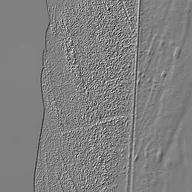

Kabartma

Belirtilen ışık açısı boyunca parlaklık gradyanlarıyla kabartma efekti uygular.
Ayarlar
| Ayar | Tür | Aralık | Varsayılan |
|---|---|---|---|
| Işık Açısı | Sayı | 0 – 360 | 45 |
| Güç | Sayı | 0 – 4 | 1 |

Belirtilen ışık açısı boyunca parlaklık gradyanlarıyla kabartma efekti uygular.
| Ayar | Tür | Aralık | Varsayılan |
|---|---|---|---|
| Işık Açısı | Sayı | 0 – 360 | 45 |
| Güç | Sayı | 0 – 4 | 1 |